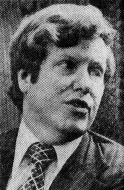

Harald Malmgren
Economist and trade negotiator, 1935 to 2025

An economist who worked on trade policy under Presidents Johnson, Nixon and Ford, and served as deputy special representative for trade negotiations, with the rank of ambassador, from 1972 to 1975. Before that he worked at the Institute for Defense Analyses after moving to Washington in 1962. 1
In interviews recorded shortly before his death in February 2025, he claimed he had investigated, for President Kennedy, an alien object recovered during a 1962 nuclear test, and that Lawrence Preston Gise of the Atomic Energy Commission had let him handle the debris, which he said spoke to him in his mind. He also said former CIA official Richard Bissell had informally briefed him on otherworldly technologies. 1,2,3
Researcher Douglas Dean Johnson, drawing on declassified FBI background reports from 1970 and 1971 and an Energy Department records search, concluded that many of his claims about his 1960s roles and clearances were false; the search found he never held an Energy Department clearance. His UFO claims remain unverified. 1,3
Open in the interactive Watcher
Related
- IDA Worked at IDA from 1962
- Starfish Prime The 1962 high-altitude tests his claim is tied to
- Malmgren shootdown claim His 1962 shootdown claim
- Harald Malmgren interview His 2025 interview
- The U.S. shot down a non-human craft during a 1962 nuclear test Claim
Sources
- Harald Malmgren Wikipedia
- Malmgren on Bissell, alien tech and missile defense (transcript excerpt of the Jesse Michels interview, released April 22, 2025) Douglas Dean Johnson, 2025
- Harald Malmgren: real-world history vs. grandiose fantasy Douglas Dean Johnson, May 20, 2025